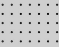
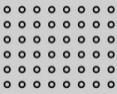
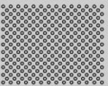
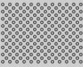
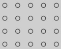
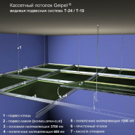

Підвісні стелі «Geipel»
Один із видів підвісних стель - касетна стеля. Стелі цього типу виробництва фірми Geipel -
вдале поєднання функціональності, якості та краси. Вони володіють усіма необхідними
характеристиками, зокрема вологостійкістю і пожежною безпекою, а крім того, мають
стильний і сучасний вигляд. Серед касетних стель виділяються стелі з дзеркальним
покриттям, за допомогою яких можна візуально збільшити об'єм кімнати, водночас такі стелі
підходять для вологого прибирання і безпечні для здоров'я. Встановити дзеркальну стелю
можна в приміщенні будь-якого типу, чи то житловий будинок, чи то офісна будівля, установа
медичного або навчального призначення.
Модульна конструкція стелі Geipel передбачає легкий і зручний монтаж навіть у
приміщеннях з великою площею стель, і, що особливо важливо, просту заміну стелі без
заміни самої системи - наприклад, якщо касети зазнали якихось пошкоджень. Природно, це
дасть змогу уникнути зайвих витрат.
Який вигляд має касетна стеля Geipel?
Кожна касета - це панель з алюмінію або оцинкованої сталі, що має квадратну форму.
Незважаючи на те, що можливе замовлення касет практично будь-якого кольору, стандартні
колірні рішення - це білий, дзеркальні срібний і золотий, срібний «металік». Покриття касет
здійснюється за допомогою якісних фарб, стійкість яких перед вологим або іншим
агресивним середовищем дає змогу їм тривалий час залишатися в прекрасному стані.
Надійні матеріали здатні витримувати монтаж і демонтаж неодноразово, зберігаючи при
цьому свій первісний вигляд. Можливі також додаткові характеристики касет для приміщень
з особливими вимогами, наприклад, підвищена вентиляційна здатність досягається за
допомогою перфорації, а для поліпшення акустики застосовується мінеральне скловолокно.
Також за бажанням замовника в касетах можуть бути присутніми вирізи різних форм для
спеціального обладнання - труб, світильників, гучномовців тощо.
Види перфорацій касетної стелі
1. Стандартна перфорація

- Призначення відповідно до DIN: Rg 0,70 - 5,00
- Вид отворів: 0702
- Діаметр отвору: 1,7
- Відстань: 5
- Отвори: радіальні, лінійне розташування
- Вільний простір: 1,54%
Файл PDF

- Призначення відповідно до DIN: Rg 1,50 - 4,00
- Вид отворів: 1511
- Діаметр отвору: 1,5
- Відстань: 4
- Отвори: радіальні, лінійне розташування
- Вільний простір: 11,0%
Файл PDF

- Призначення відповідно до DIN: Rd 1,50 - 2,83
- Вид отворів: 1522
- Діаметр отвору: 1,5
- Відстань: 2,83
- Отвори: радіальні, лінійне розташування
- Вільний простір: 22%
Файл PDF

- Призначення відповідно до DIN: Rd 1,80 - 3,52
- Вид отворів: 1821
- Діаметр отвору: 1,8
- Відстань: 3,52
- Отвори: радіальні, лінійне розташування
- Вільний простір: 20,77%
Файл PDF

- Призначення відповідно до DIN: Rg 2,00 - 6,00
- Вид отворів: 2009
- Діаметр отвору: 2
- Відстань: 6
- Отвори: радіальні, лінійне розташування
- Вільний простір: 8,7%
Файл PDF
Переваги касетної стелі Geipel

Рівень якості
Для виробництва підвісних касетних стель
Geipel використовують високоякісні метали -
оцинковану сталь і алюміній.
Товщину металу, яка забезпечує найкращі
експлуатаційні властивості касетних стель,
визначають за допомогою складних інженерних
розрахунків.
Поверхні касет у процесі виготовлення
надають ідеальної гладкості, що робить стелю особливо функціональною і,
звісно, стильною та красивою.
Міцність і надійність
- 1. Для виробництва касет Geipel використовується метал, захищений від
корозії і здатний витримувати вплив агресивного середовища, тому
стелі Geipel служать протягом багатьох років.
- 2. Колір касет зберігається протягом усього терміну експлуатації, тому
що порошкове покриття, яке наносять на них, стійке до пошкоджень і
впливу ультрафіолетових променів.
- 3. Касети Geipel з білим покриттям здатні знижувати енерговитрати за
рахунок того, що їхня поверхня може розсіювати і відбивати світло,
стаючи додатковим джерелом світла.